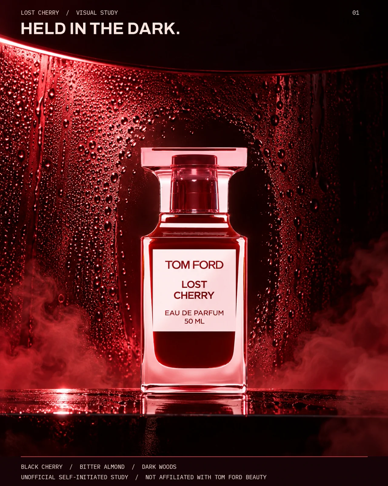
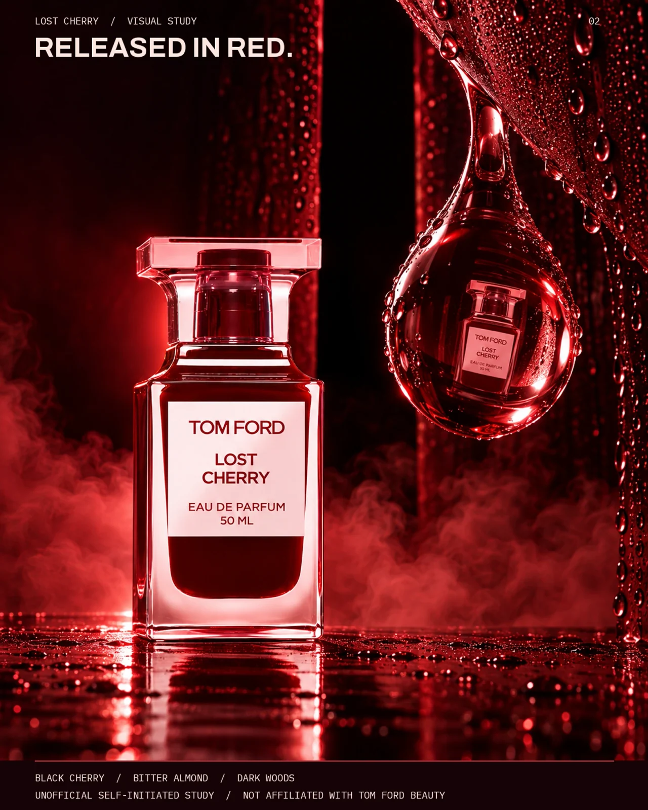

← All work
Fragrance · Unofficial brand study
PRESSURE CHAMBER
Sweetness held under pressure, then released.

The idea
The first frame encloses the bottle in wet red glass. The next gives one refractive droplet the role of a release valve.
Making the world
Condensation, black burgundy, carmine edge light and low fog create depth without a literal cherry prop. The product render is a study and its label needs brand review.
The series
